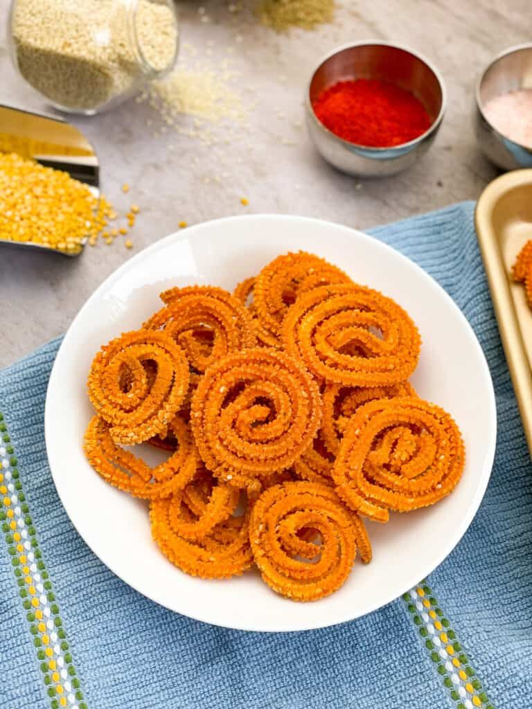

Murukku Recipe

Description
“Murukku” is a savory crunchy, crispy snack from India, specifically the Southern states.
Murukku in Tamil means “Twisted”, referring to the shape of the murukku.
It has different names in different languages, Jantikalu in telugu, Chakli in Kannada, etc.
and made all over the Indian subcontinent with little variations.
The murukku recipe also varies by region and has different shapes. Jantikalu are like a bird’s nest,
Chagodi is like a “O” and this particular variety is called “Mullu Murukku”,
mullu means thorn and the shape of this murukku is thorny to touch. Whatever they are shaped like, they are all delicious!
Ingredients
- 3/4 cup roasted gram dal
- 3 cup rice flour
- 1/2 tsp chilli powder
- 2 tbsp black sesame seeds
- 1/2 tsp ajwain/ carom seeds
- pinch asafoetida / hing
- 3/4 tsp salt
- 2 tbsp butter, softened
- hot water, for kneading
- oil for frying
Steps
- In a mixer jar take 3/4 cup roasted gram dal and grind to fine powder.
- Transfer the roasted gram dal powder to a sieve.
- dd 3 cup rice flour and sieve the flour.
- Also add ½ tsp chilli powder, 2 tbsp black sesame seeds, ½ tsp ajwain, pinch hing, ¾ tsp salt and 2 tbsp butter.
- Crumble and mix well making sure the flour is moist.
- Add 1 cup hot water and mix well.
- Press the flour with your hand making sure the flour is moist.
- Cover and rest for 5 minutes.
- After 5 minutes, mix the flour again.
- Add water as required and start to knead the dough.
- Knead to a smooth and soft nonsticky dough.
- Take the star mold and fix it to the chakli maker.
- Grease the chakli maker with some oil. this prevents the dough from sticking to the mold.
- Furthermore, make a cylindrical shape out of dough and place the dough inside the maker.
- tighten the lid and start preparing chaklis on the steel plate. or you can use wet cloth or butter paper make small spiral shape chaklis by pressing.
- seal the ends so that it doesn’t fall apart while deep frying.
- take one murukku at a time and slide it into the hot oil.
- flip the murukku and fry on low to medium flame till they turn crispy from both sides.
- furthermore, drain over a paper towel to remove excess oil.
- finally, once cooled enjoy instant chakli or store in an airtight container for 2 weeks.
Home